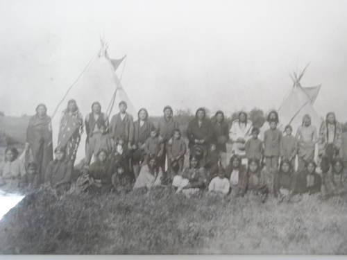

An Indian Story
by Christine Baldhead and George Sutherland
|  |
|
A group of Cree people in front of tipis, circa 1905. |
One Arrow stood naked before the commissioners and two thousand people in 1876 and said, “I came to the world naked. I had nothing then. I have nothing now. Before the white man came we had buffalo that supplied us with food, clothing, tents. We had berries. We had the protection of the Great Spirit. You are taking our living from us.”
Times before the treaty were pretty hard for the people of One Arrow and other Indian Bands. The buffalo were gone. The white man attributed this to their zealous and intrusive way of life, their vibrant culture and their marksmanship. Indian legend says the buffalo just disappeared. Whatever the cause, when the primary supply of food for a great number of people is eliminated the impact is immediate and the consequences are starvation, disease, discontent, despair, and devastation.
This is how it was with the Indian people just before treaty. The whiteman’s trump card was food. The Indian people had to fold. They were hungry and sick. This was combined with space restrictions, internal discord and fanatical men in black robes clamoring for Indian souls. There were strange men in red jackets with equally strange habits scouring the countryside bearing trinkets, beads and hands full of $5.00 bills. On behalf of a big breasted woman they made promises in exchange for Indian land, lasts into eternity. Many Indian people were sent into a cultural tailspin from which they have not fully recovered.
On August 23 and 28, 1876 at Fort Carlton, Mistawasis, Ah-tuk-uk-koop, Beardy, One Arrow, Okemasis, and other headmen put their marks to Treaty 6. Several days later on September 9, 1876 at Fort Pitt, Sweetgrass led a number of Chiefs to do the same. Big Bear refused to sign.
There is the story of doubtful origins that has Commissioner Morris asking one of the Chiefs how much land he was surrendering to the whiteman. The Chief, already at some distance from the signing table and walking towards the hot, bright, autumn sun turned and gave Morris the finger. Morris turned to his trusted aide and said “They’re give us this much!” extending his closed fist with the thumb pointing upward.
Everything ground to a halt for the One Arrow Band after the treaty signing. Now they were wards of the government and as such they were expected to be submissive to the will of the whitemen. This included Indian Agents, farm instructors, bookkeepers, clerks, North West Mounted Policemen, priests, nuns, teachers, settlers and bootleggers. It was the only attitude possible considering the activity around them. This is why there is no Indian record during this period. It was too bleak and too dismal to remember, much less record. As well, the Indian tradition was an oral tradition. This way of remembering gave significance only to truth and to what positively maintained their way of life.
Slowly the Indian people began to realize the life that they known as mighty warriors and great hunters was at an end. Gradually they began to change. Grudgingly, they began to accept the whiteman’s food, their tools, their clothes, their government, their Christian God and from necessity, they learned their language. Soon the whiteman’s instiutions of justice, learning, politics, and social security dominated the Indian people. The Department of Indian Affairs and the Indian Act was now their way of life.
Indian people lived under this system for many years, regulated this way. The rules were rigid and the laws harsh. The people who employed them were often righteous and over-bearing, if not maniacal. Indian people were confined and isolated. They were not allowed to do anything without due process and authorization. In such as restrictive environment there can be no positive development. Reserve Indian people became just that – reserved and complacent. They only did what was expected of them and not much else.
Because of little or no stimulation, Indian people became unresponsive to the whiteman’s culture and civilization. From this attitude, Indian Affairs assumed Indian people were not much good for anything except basic farming, basic livestock raising, basic gardening, basic catechism, and basic schooling and all carried out under strict supervision. The Department of Indian Affairs gave the Indian people plows and oxen, horses and wagons, cattle, sheep, goats, pigs, chicken, turkeys, various grain and vegetable seed, nails, pliers, hammers, saws, axes, and barbwire. With this array of things from the white mother about them, the Indian people stood in the middle of it all – stoic, silent, and detached. They were unable to relate to anything the whiteman gave them except horses. They became reluctant farmers. Indian Affairs journals are full of what was seen as humorous attempts by Indian people at farming. Many of the stories were tragic. The story of Almighty Voice was just one such incident.
Indian people are intelligent, industrious and above all resilient. They knew and understood the land. They had explored this land. But now the whiteman ignored that knowledge and assumed the role of teacher. The whiteman explored the land that had been explored. They mapped the land, divided it into little squares and began to settle it. The whiteman did not understand the land and instead of living with the land, they sought to dominate it.
The farm instructors were hired. As a rule, they were not very good. If these men had been any good they probably would have had their own successful farms, instead of attempting to teach a few unruly natives how to raise cows and goats, seed wheat and oats and plant turnips and squash. In the beginning the Indian people were successful farmers. Department letters, memos and records show this. Most Indian Farmers on reserves had twenty or more head of cattle. Many had forty or more acres of land under cultivation. They had sheep, goats and chickens. They had gigantic gardens; and all this in addition to the band projects. The Indian people were big farmers with big farms compared to the poor white settlers around them. In fact they were so successful, Indian Affairs could not keep up with their demands of continued expansion. Nor could its slow bureaucratic system accommodate the successful.
Instead of understanding the Indian situation, growth and enterprise, the government and Indian Affairs became even more petty and spewed out more petty rules, regulations and laws with which the Indian people had to contend. This, combined with the drought and the flying dust of the early thirties, a bad white attitude, personified by the Department of Indian affairs, made Indian people realize it was an impossible situation. By now, most were fully Christianized and most of the Indian children were in schools. Indian education is another tragic story of oppression, abuse and failure. By the close of the 1920’s, the Indian people had developed about as far as they had been allowed.
Most Indians gave up farming. This feeling of hopelessness permeated all aspects of their new life. They now concentrated on being good Christians. Maybe they would get a better deal, maybe even some understanding and respect, from the whiteman’s god. Indian people gave up on the white mother. The final blow to early Indian development came when the Department of Indian Affairs blamed its own ineptitude, callousness and lack of understanding for natural rhythm on the Indians. They called in “Indian Time”. The Indian people just gave up and waited for another time. However, whitemen could not understand why Indians appeared to be inert, inactive, and deferential. To find the answer to their lack of understanding, they started programs they called Indian Studies.
- Printer-friendly version
- Login to post comments